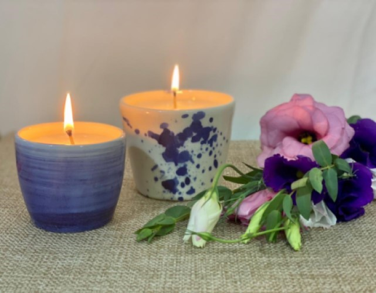

Bienvenidos a Bhadramaste

aca velas
aca difusores
Bhadramaste es la unión de dos palabras escritas en Sanscrito (lengua antigua utilizada por el budismo y el hinduismo) BHADRA y NAMASTE. BHADRA se utiliza para desearle a la otra persona que tenga prosperidad, fortuna, alegría, bendición. NAMAH es un saludo o reverencia. TE es el pronombre de TI.